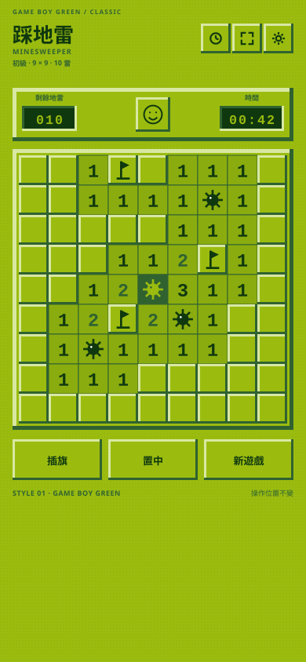
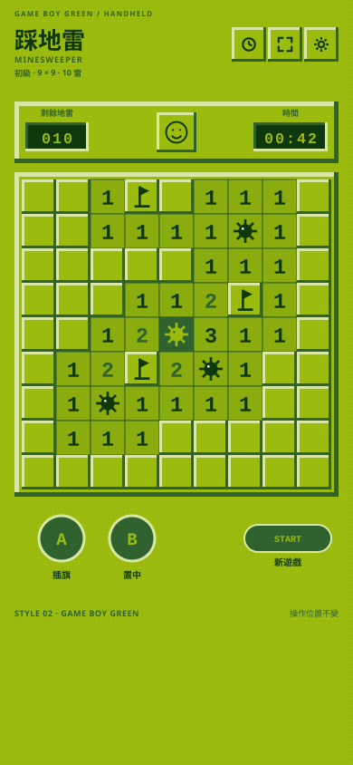
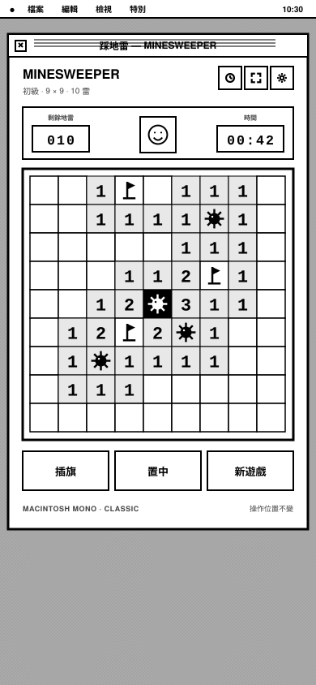
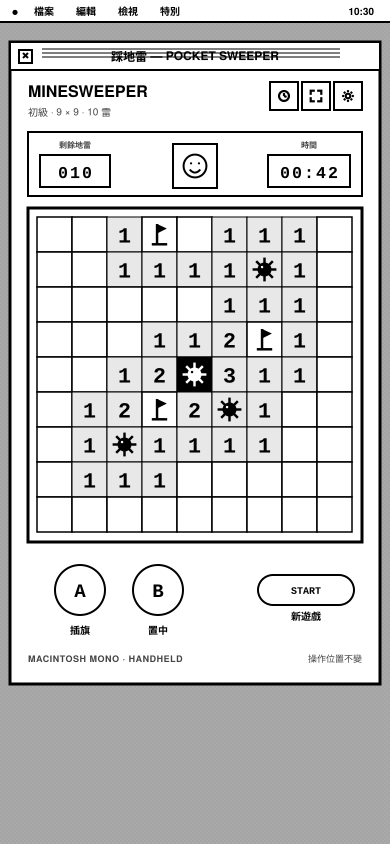

Game Boy 綠與麥金塔單色，各自套用在「經典版」與「復古掌機版」。控制按鈕位置不變，只改變配色與材質語言。
DMG 四色綠、點陣背景、經典三鍵列。適合保留現在的 Windows 操作習慣，只換上掌機螢幕質感。

同樣的 DMG 綠，搭配 A / B / START 控制盤，最接近掌機實機的氛圍。

System 7 黑白視窗、條紋標題列、單色數字與旗幟。保留經典資訊列與三鍵操作。

Macintosh 視窗語言套用在掌機版配置，A / B / START 仍維持原來的位置。
